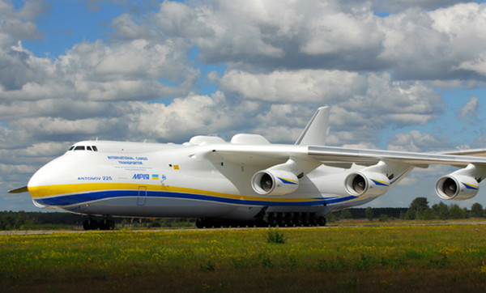
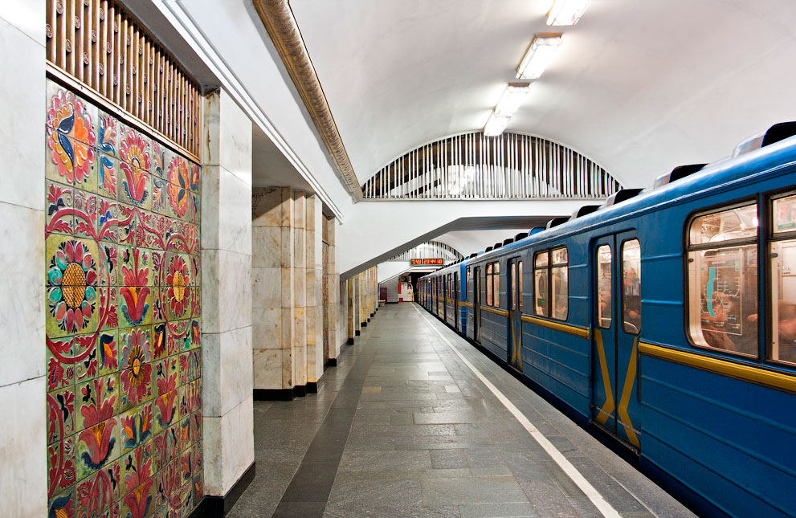
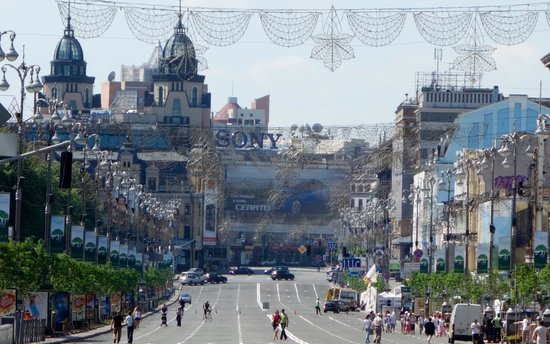
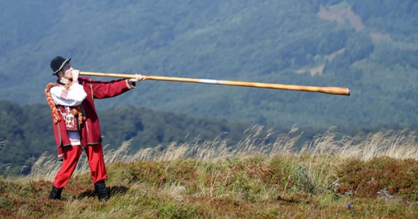

Within Ukraine is the geographical centre of Europe. It's not quite as simple as that. A number of locations lay claim to the title and it depends on how you measure Europe, but the small town of Rakhiv in western Ukraine is one such place. The country has a second claimant in Transcarpathia, where an obelisk marks the spot.
AN-225 "Mria" (from Ukrainian - "a dream") is today the biggest and the heaviest aircraft with the highest cargo capacity in the World. This unique cargo plane was constructed in the 1980's by the Antonov's Development Laboratory (Kiev, Ukraine). Its length is 84 m, height - 18 m, total cargo capacity - 250 tons.

Arsenalna station is located 105.5 meters below the surface, making it the deepest metro station in the world. If you made a vertical shaft on earth as deep, you could drop the entire Statue of Liberty into it and still have more than twelve meters of headroom left to drop other stuff. To board a subway train at this station, commuters have to take two seemingly never-ending escalators to the bottom. The journey takes up to five minutes.

The first state constitution in Europe was created by a Ukrainian politician Pylyp Orlyk. On April 5th, 1710 he was elected the Hetman of Zaporozhye troops. On the same day Pylyp Orlyk has announced "the Constitution of the rights and freedoms of Zaporizhye army". For example, U.S. Constitution was adopted in 1787 and French and Polish in 1791.
Kiev's main street, Khreshchatyk Street, is often referred to as the shortest yet widest main drag in the world. At only 1.2 km long but remarkably broad, the street, which was destroyed in Second World War, is a focal point of the capital.

Vyshyvanka is the Ukrainian national costume. It is decorated with ornamental hand woven embroidery featuring floral detail. Both women and men wear the costume on various occasions.
Unlike many cultures around the world, Ukrainians wear wedding rings on the right hand not the left.
The world's longest musical instrument also originates from Ukraine. The pipe piece is aptly named Trembita.

Ukraine got the 4th largest number of IT professionals in the world, behind the US, India, and Russia.